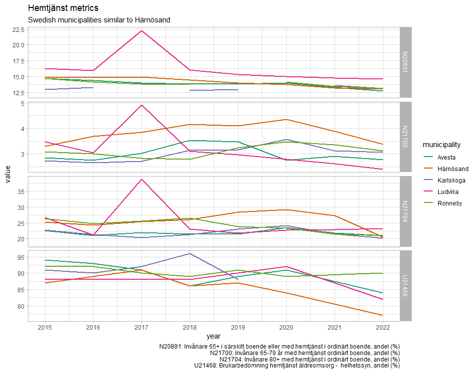

5 Comparable municipalities
5.1 From VR Proposal
Per the grant proposal, three comparable municipalities will be identified and used as controls.
“Härnösand is the intervention municipality, with three other municipalities as controls. Based on information from the Kolada database (Jul 30, 2024), Avesta, Ludvika, Ronneby and Karlskoga are most like Härnösand when it comes to health care and social services for older adults. Two of those and one municipality of similar size as Härnösand will be selected among the nine municipalities in Sweden affiliated with the AFCC network.”
Referring to the WHO website for Age friendly cities and communities and the website Myndigheten för delaktighet, the following 9 municipalities are members of the AFCC network:
Gävle, Göteborg, Hallstahammar, Stockholm, Uppsala, Kristianstad, Botkyrka, Upplands-Bro, Östersund
Avesta, Ludvika, Ronneby and Karlskoga
https://extranet.who.int/agefriendlyworld/search-network/?_sft_countries=sweden https://www.mfd.se/samhallsomraden/utformning-av-fysisk-miljo/aldersvanliga-stader-och-samhallen/
5.2 Matching - from data found in Register-RELOC-AGE
Kolada’s data is extensive and I would argue is a superior source to identify comparable municipalities. However, there are some metrics which could be useful, depending on the metrics desired.
I have created a tool to identify comparable municipalities based on a few hand-chosen metrics. Other metrics can be added - let me know and I can add them to the tool. It can be found below (may be slow to load), or accessed directly at https://nickchristie.shinyapps.io/harnosand/ :
5.3 Matching - other ideas
The Härnösand Initiative specifies Kolada metrics in which the success (and funding) is dependent on. The text below is from a Kommunstyrelsen meeting which defines the metrics.
The meeting notes may be found here:
Invånare 65+ i särskilt boende eller med hemtjänst i ordinärt boende, andel (%)
”Andelsmått” betyder det index i Kolada som benämns ”Invånare 65+ med hemtjänst i ordinärt boende, andel (%)”.
”SÄBO-mått” betyder det index som i Kolada benämns ”Invånare 65+ i särskilda boendeformer, andel (%)”.
”Kvalitetsmått” betyder det index som i Kolada benämns ”Brukarbedömning hemtjänst äldreomsorg - helhetssyn, andel (%)”.
”Timmått” betyder det index i Kolada benämnt ”Beviljade antal hemtjänsttimmar per brukare och månad för timregistrerade hemtjänsttagare 65+ i ordinärt boende, timmar/hemtjänsttagare”.
I have yet to track down the exact Kolada data item for these metrics. However, since the success of the Initiative will be judged by these metrics, it can be argued that municipalities with comparable values of these metrics would be superior candidates for comparisons.
Here are some similar metrics:
N20891 - Antal personer 65+ år i särskilt boende eller med hemtjänst i ordinärt boende, dividerat med antal invånare 65+ år den 31/12.
N21700 - Antal personer 65-79 år med hemtjänst i ordinärt boende, dividerat med antal invånare 65-79 år den 31/12.
N21704 Antal personer 80+ år med hemtjänst i ordinärt boende, dividerat med antal invånare 80+ år den 31/12.
U21468 -Antal personer i åldrarna 65 år och äldre som uppgett “Mycket nöjd” eller “Ganska nöjd” på frågan “Hur nöjd eller missnöjd är du sammantaget med den hemtjänst du har?”
If we identify the exact metric numbers from Kolada, we can pull the data and find comparables. Or use their tool. Here are these metrics plotted for some comparable municipalities:

5.4 Propensity score matching
Another method for the identification of comparable municipalities is propensity score matching (PSM). PSM is a statistical technique used to reduce bias by matching units — in this case, municipalities — that have a similar likelihood of receiving the treatment (i.e., participating in the Härnösand program), based on observed characteristics.
In this approach, a logistic regression model is used to estimate each municipality’s propensity score — the probability of receiving the intervention — using relevant pre-treatment covariates. These may include variables from Kolada such as the ones above.
Once scores are estimated, the treated municipality (Härnösand) is matched to the most similar municipalities based on these scores.
PSM offers a transparent, data-driven method for choosing comparison municipalities, which provides a structured methodological approach that may reduce subjectivity concerns.
An alternative or complementary method to PSM is the Synthetic Control Method (SCM). This approach constructs a synthetic version of the treated municipality by assigning weights to a combination of untreated municipalities, such that the weighted average best approximates the pre-intervention characteristics and trends of the treated unit. SCM is particularly useful when only one unit is treated and when multiple years of pre-treatment outcome data are available. SCM also provides intuitive visual diagnostics of pre- and post-intervention trends.
5.4.1 Steps for Conducting Propensity Score Matching (PSM)
1. Define the treatment and units of analysis
Clearly specify which municipality is treated and which are potential controls. The unit of analysis should be municipalities, since the treatment is assigned at that level. First screening on geographical location may be an option in identifying potential controls.2. Select relevant covariates
Choose pre-treatment variables that are related to both the likelihood of receiving the treatment and the outcomes of interest. Use sources from Kolada to ensure transparency and comparability.3. Use historical averages to improve covariate stability
When possible, use multi-year averages of key variables (e.g., 2019–2021) to reduce the influence of short-term fluctuations and increase the reliability of your matching. Look at the trends of these variables (increasing, decreasing?) to check appropriate comparability.4. Estimate propensity scores
Run a logistic regression model where the dependent variable is treatment status (1 = treated, 0 = control), and the independent variables are the selected covariates. The output is a predicted probability (propensity score) for each municipality.5. Match treated and control units
Match the treated municipality to one or more control municipalities with similar propensity scores. Use methods like nearest-neighbor matching, caliper matching, or Mahalanobis distance as appropriate.6. Check covariate balance
After matching, assess whether the treated and control municipalities are similar in their covariates. Use standardized mean differences, summary tables, or visual plots to check balance.7. Conduct outcome analysis
Compare outcomes between the treated and matched control municipalities. This can be done directly or using methods such as Difference-in-Differences if pre/post data is available.8. Conduct sensitivity checks
Test the robustness of your results using alternative matching methods or specifications. Consider exploring how unmeasured confounding might affect your findings.
5.4.2 Example Code for Propensity Score Matching in Stata
* Step 1: Load your dataset
use "municipality_data.dta", clear
* Step 2: Create the treatment variable
* Example: 1 = Härnösand (treated), 0 = other municipalities
gen treated = (municipality == "Härnösand")
gen treated = (kommun == 2280)
* Step 3: Estimate propensity scores using logistic regression
logit treated elderly_pct homecare_pct spending_per_capita satisfaction_score
predict pscore, pr
* Step 4: Perform nearest-neighbor matching
* Install psmatch2 if not already installed
ssc install psmatch2, replace
* Match using 1-to-3 nearest neighbors with a caliper
psmatch2 treated (pscore) (elderly_pct homecare_pct spending_per_capita satisfaction_score), neighbor(3) caliper(0.05) logit
* Step 5: Check covariate balance after matching
pstest elderly_pct homecare_pct spending_per_capita satisfaction_score, graph
* Step 6: Analyze the outcome (e.g., % in care homes) using matched data
* Outcome variable: carehome_pct
* Keep only matched observations
gen matched = _weight > 0
keep if matched
* Run weighted regression
reg carehome_pct treated [aw=_weight]
* Step 7 (optional): Use Difference-in-Differences if you have pre/post data
gen treated_post = treated * post
reg carehome_pct treated post treated_post [aw=_weight]